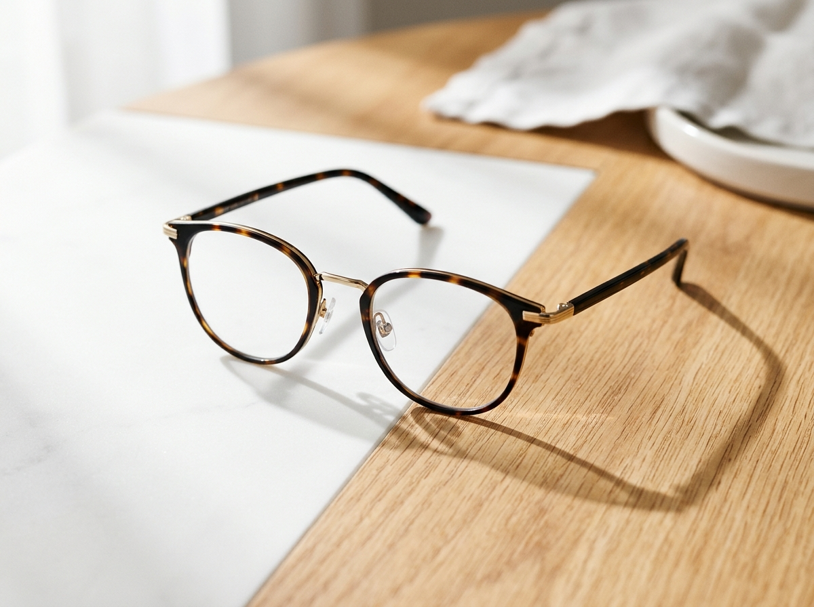
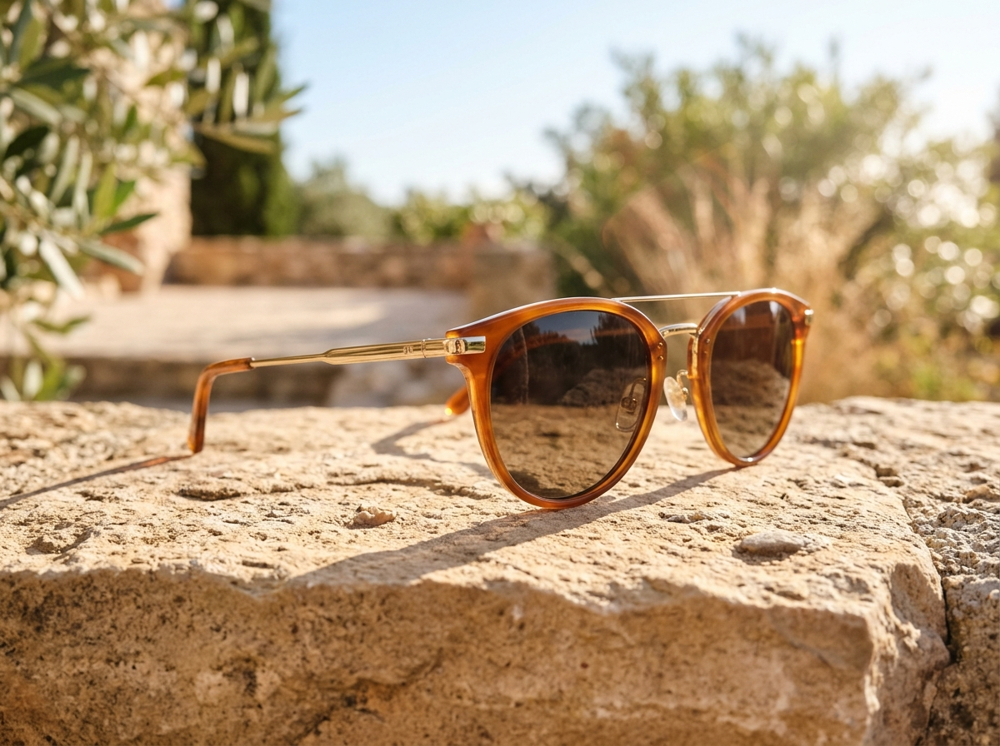
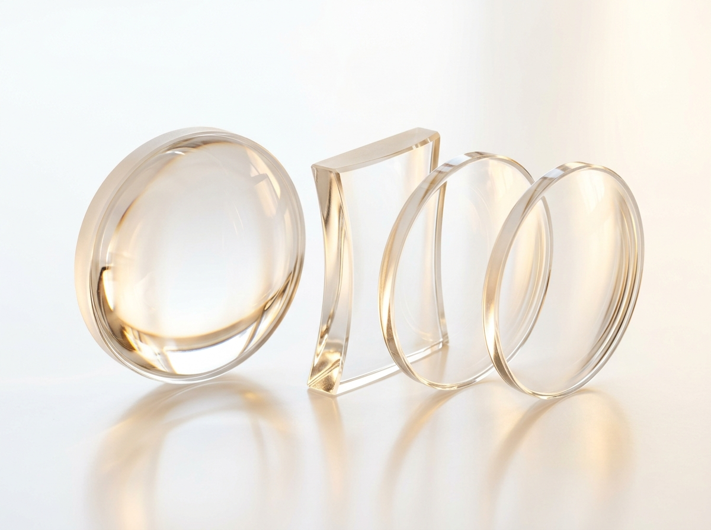
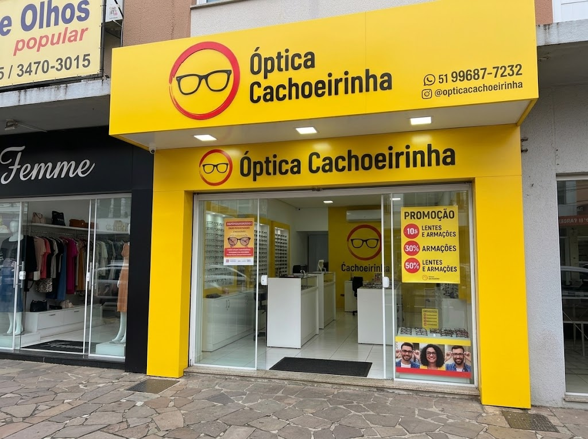
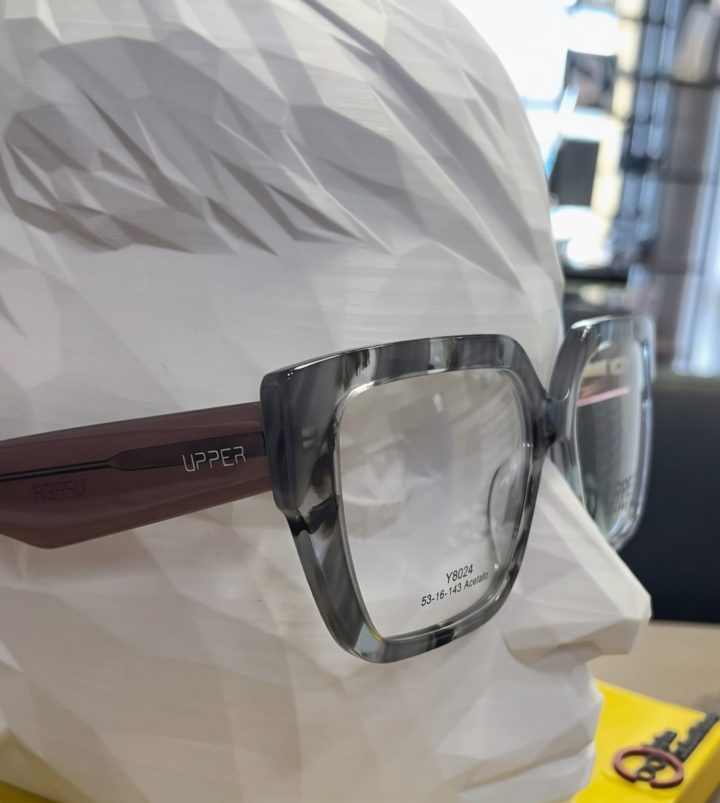

Grau & ConfortoÓculos de Grau
Modelos em acetato premium, metal fino e titânio. Estruturas pensadas para acomodar com perfeição qualquer graduação de lentes.
- Leves e resistentes
- Diversos formatos anatômicos
- Consultoria de visagismo
Armações que combinam com a sua personalidade, lentes de alta tecnologia e atendimento humano de quem realmente entende do assunto.
Parcerias com as melhores clínicas da região
Modelos de marcas originais e alta resistência
Manutenção e alinhamento facial permanente
Consultoria acolhedora para o seu formato de rosto
Qualidade, leveza e conforto visual. Escolha a categoria ideal para as suas necessidades:

Grau & ConfortoModelos em acetato premium, metal fino e titânio. Estruturas pensadas para acomodar com perfeição qualquer graduação de lentes.

Proteção UV400Proteção completa contra raios UVA/UVB com muito estilo. Lentes polarizadas, espelhadas e degradês com armações exclusivas.

Alta TecnologiaSoluções ópticas de última geração para visão nítida em qualquer distância: antirreflexo, filtro Blue Light para computadores e multifocais digitais.
Trabalhamos com marcas reconhecidas pelo design arrojado, durabilidade e procedência garantida.
Na Óptica Cachoeirinha, você conta com suporte técnico contínuo para garantir que seu óculos permaneça confortável, ajustado e nítido.
Explicamos exatamente cada valor da sua receita e indicamos a espessura e material ideal para o seu grau.
Ajudamos você a testar e encontrar o modelo que valoriza o seu formato de rosto, tons de pele e estilo.
Regulagem nas hastes, aperto de parafusos e substituição de plaquetas para máximo conforto facial.
Limpeza profunda para eliminar resíduos e devolver o brilho e a transparência total das lentes.
Precisa consultar com oftalmologista ou atualizar sua graduação? Confira os principais consultórios e clínicas em Cachoeirinha, todos situados na Av. Gen. Flores da Cunha:
Av. Gen. Flores da Cunha, 1320 · 10º andar, sala 1003 · Distrito Industrial, Cachoeirinha - RS, CEP 94910-002
Ver Rota no Google MapsDaniel Chirinos
Av. Gen. Flores da Cunha, 1050 · Conj 201 · Centro, Cachoeirinha - RS, CEP 94910-001
Ver Rota no Google MapsClínica de Oftalmologia
Av. Gen. Flores da Cunha, 903 · Centro, Cachoeirinha - RS, CEP 94910-001
Ver Rota no Google MapsConsultas & Especialidades
Av. Gen. Flores da Cunha, 2165 · Vila Cachoeirinha, Cachoeirinha - RS, CEP 94910-003
Ver Rota no Google MapsUnidade Cachoeirinha
Av. Gen. Flores da Cunha, 1741 · Parada 51 · Vila Bom Princípio, Cachoeirinha - RS, CEP 94910-003
Ver Rota no Google MapsAtendimento Médico Integrado
Av. Gen. Flores da Cunha, 770 · Vila Bom Princípio, Cachoeirinha - RS, CEP 94910-001
Ver Rota no Google MapsEnvie uma foto da sua receita no WhatsApp. Nossa equipe calcula as melhores opções de lentes para você em minutos!
Aproveite as melhores condições de pagamento e descontos imperdíveis na Óptica Cachoeirinha:
Parcelamento em até 10 vezes sem juros para você sair com o seu óculos completo com todo o conforto.
Descontos especiais de até 30% nas marcas e armações participantes para renovar seu estilo.
Condições imperdíveis com até 50% em pacotes selecionados de lentes e armações completas.
* Condições sujeitas a regulamento interno da loja e disponibilidade de estoque. Consulte nossa equipe pelo WhatsApp.
Um ponto comercial moderno, com vitrine completa, ambiente climatizado e atendimento próximo para receber você e sua família.

Av. Gen. Flores da Cunha, 1776 · Loja 2Localizada no coração de Cachoeirinha, com excelente visibilidade, fácil acesso e ampla vitrine com as últimas novidades em óculos de sol e armações de grau.

Destaque da VitrineModelos contemporâneos em acetato italiano com acabamento primoroso. Experimente diversos formatos para encontrar o encaixe facial ideal.
Traga sua receita ou venha experimentar novos modelos. Estamos à disposição para tirar qualquer dúvida e oferecer o melhor orçamento da cidade.